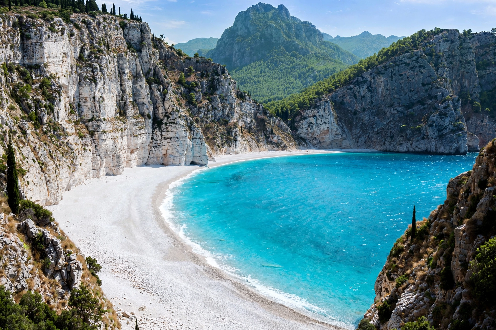

Cephalonia or Kefalonia is the largest of the Ionian Islands in western Greece and the sixth-largest Greek island overall. Its capital is Argostoli. The island is known for Mount Ainos, its fir forests, caves such as Melissani and Drogarati, and beaches including Myrtos.

| Country | Greece |
|---|---|
| Region | Ionian Islands |
| Capital | Argostoli |
| Area | 773 km² |
| Highest point | Mount Ainos, 1,628 m |
Inhabited since Paleolithic times, named in tradition after the mythical Cephalus, the island passed through Byzantine, Norman, Venetian, Ottoman, French and British hands before joining Greece in 1864. In the Second World War Italian and German forces occupied it; the 1943 massacre of the Italian Acqui Division was later depicted in the novel and film Captain Corelli's Mandolin. A devastating earthquake in 1953 destroyed most buildings.
Rugged limestone mountains, sinkholes and underground lakes characterise the island. Together with Ithaca it forms a regional unit; its Robola wine and fir honey are noted products.